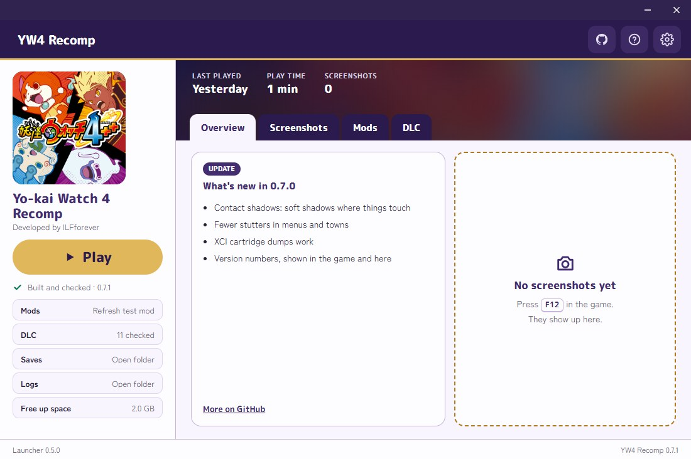
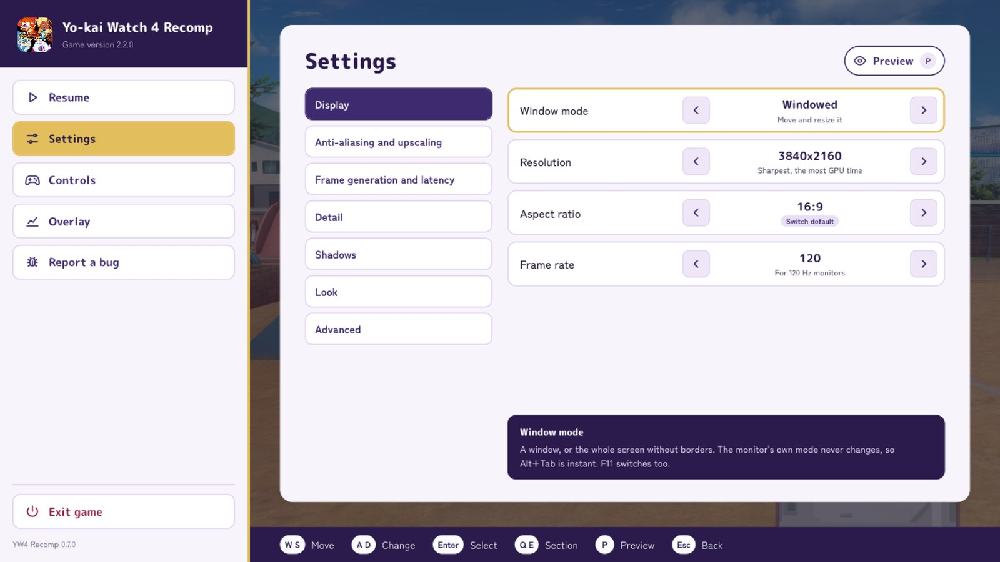
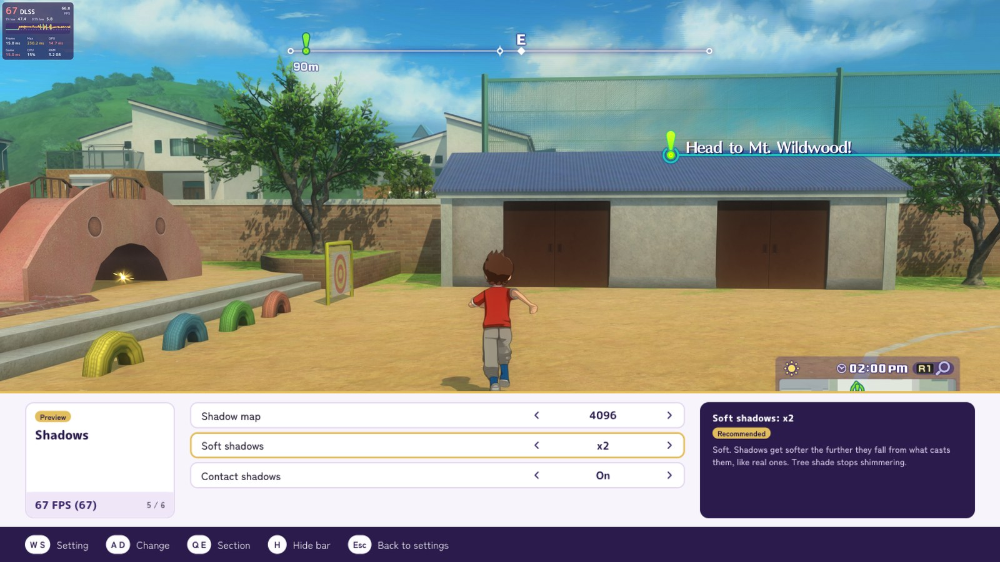
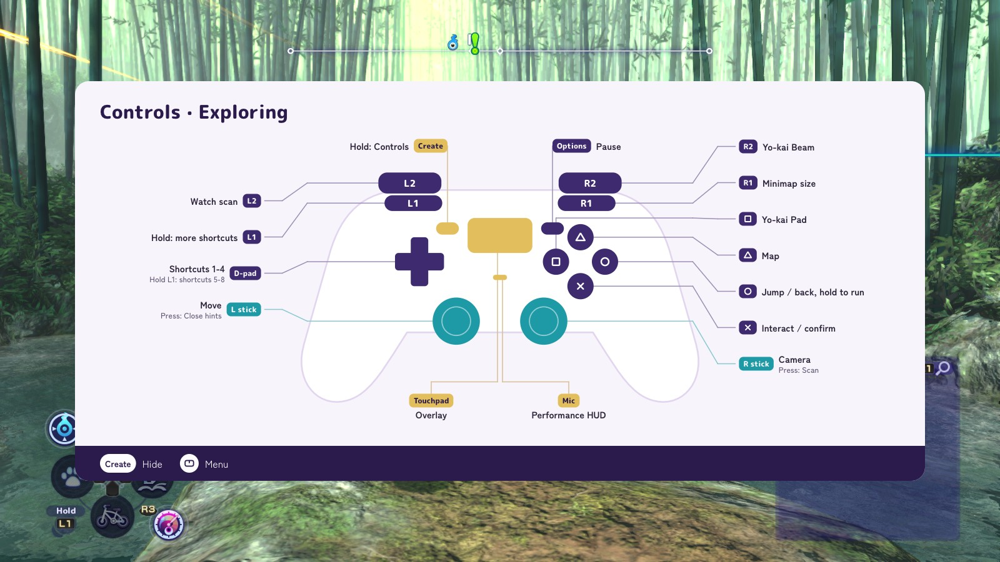
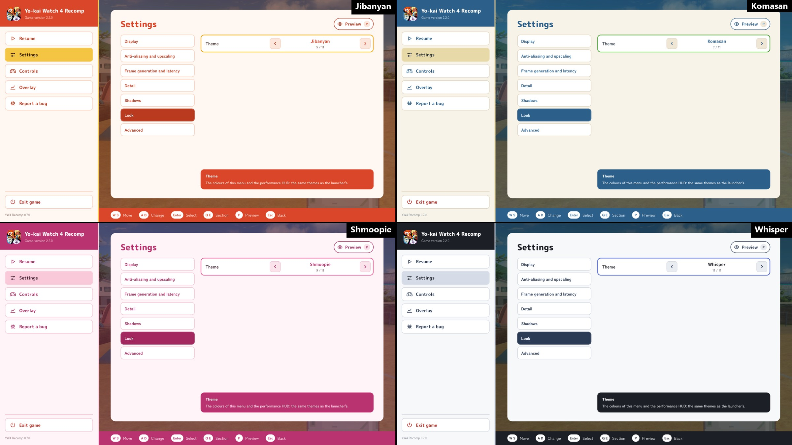

A static recompiler in the style of N64Recomp: the game's ARM code is translated to C ahead of time and built into a Windows program, with the Switch's system services and its graphics API reimplemented on the PC (Vulkan).
Unlike an emulator, which replays the game's GPU commands as they are, the port can replace the game's renderer piece by piece. That is how it gets higher resolutions, wider screens, better shadows and DLSS and FSR upscaling.
Bring your own game. Nothing from the game is in the project. You need files from your own copy with the last update, 2.2.0.
- Status
- Work in progress, not playable end to end
- Platforms
- Windows x86-64 (Linux experimental)
- Graphics
- Vulkan
- Game version
- Update 2.2.0
- CPU, busy street
- 111% of a core (emulator: 210%)
- Memory
- 3.9 GB (emulator: ~7 GB, private + mapped)
- Licence
- MIT
- Resolution1600×900 (the Switch's) up to 3840×2160
- Aspect ratio16:10, 21:9 and 32:9, the menus kept 16:9 in the middle
- ShadowsMaps up to 4096, soft shadows (PCSS), contact shadows
- Anti-aliasingFXAA, SMAA and TAA, DLSS, FSR
- Texture filteringAnisotropic up to ×16
- Frame rate30, 60, 120, 144 or unlimited
- UpscalingNVIDIA DLSS (3.10.9.16) and AMD FSR (3.1)
- Frame generationNVIDIA DLSS (2.14.16) and AMD FSR (3.1 or 4)
- ControlsKeyboard and mouse, Xbox, PlayStation and Joy-Cons, controls rebindable in settings
- ModsThe English translation patch and other Switch mods
- In-game overlaySteam inspired control overlay: where you can find Graphical settings, Keybinds and more
- ThemesYo-kai inspired colours for the launcher and the overlay
On an ASUS Zenbook (Ryzen 5 7530U, integrated Radeon graphics): about 35-40 frames/s with YW4 Recomp, 22-30 with the Eden emulator. More showcases





Claude (Anthropic's model, used through Claude Code) wrote most of this project: the recompiler, the runtime, the reverse engineering notes and the docs. A person decides what to work on, plays and tests every build, compares it against the real game and reviews the changes.